展望の良い山
山頂からの展望が良い山ベスト50です。
首都圏から日帰りで行ける山で、展望が素晴らしい山を選びました。
首都圏から日帰りで行ける山で、展望が素晴らしい山を選びました。
| 1 | 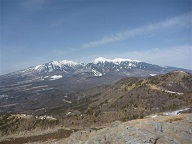 | 飯盛山 | 1643m | 2012.03.20 | 山頂からは360度の展望が広がり、間近に迫力ある八ヶ岳が迫る。南アルプスや奥秩父の山々も見渡せる。 |
| 2 | 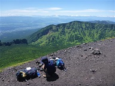 | 浅間山（前掛山） | 2524m | 2022.08.19 | 火山のため樹木が無く、遮るもののない展望が広がる。目の前には浅間山本峰、背後には緑に覆われた第二外輪山、遠く八ヶ岳や志賀高原の山々、西上州の山々を見渡せる。 |
| 3 | 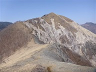 | 沢入山 | 1705m | 2024.04.14 | 中倉山～沢入山の稜線は笹原が広がり最高の展望が広がる。日光、足尾の山々を眺めながらの稜線漫歩が楽しめる。展望が良いのは足尾銅山の鉱毒の影響なのが玉に瑕。 |
| 4 | 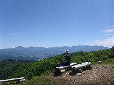 | 守屋山 | 1651m | 2023.06.04 | 日本三大アルプスを見渡せる絶好の展望台。間近には迫力ある八ヶ岳のほか、美ヶ原や霧ヶ峰、眼下には諏訪湖を見ることができる。 |
| 5 | 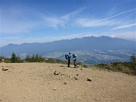 | 入笠山 | 1955m | 2014.09.23 | 絶好の位置にある山で、山頂からは八ヶ岳のほか、北・中央・南アルプスの三大アルプスが見渡せる。遠く富士山の頭も見える。 |
| 6 | 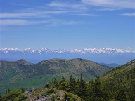 | 篭ノ登山 | 2227m | 2017.06.11 | 少々遠いが首都圏から日帰り圏内で、一直線に並ぶ北アルプス全体を見渡すことができる数少ない山。八ヶ岳や上信越の山々も見渡せる。 |
| 7 | 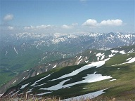 | 平標山 | 1984m | 2012.05.19 | 山頂からは遮るもののない大展望が得られる。谷川連峰を始めとした上越の山々を望むことができる。 |
| 8 | 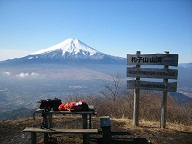 | 杓子山 | 1598m | 2006.11.25 | 富士山が最も美しく見える山であり、正に富士山の展望台。遠く南アルプスも見える。 |
| 9 | 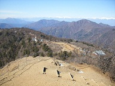 | 三ツ峠山 | 1785m | 2007.03.18 | 真正面に聳える富士山の景観が素晴らしい。御坂山塊の山々、遠くに南アルプスを望むことができる。 |
| 10 | 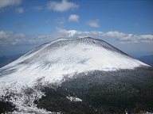 | 黒斑山 | 2404m | 2007.04.14 | 真正面に聳える浅間山の姿が大迫力。ここまで間近に迫力ある山を望める山は他にない。 |
| 11 | 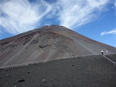 | 宝永山 | 2693m | 2015.09.12 | 富士山の中腹にある側火山で、目の前に聳え立つ富士山を望める。富士山の斜面から少し離れた位置にあるため、富士山の登山道から眺めるよりも迫力ある姿が望める。 |
| 12 | 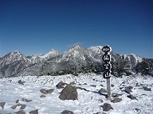 | 編笠山 | 2524m | 2009.12.06 | 八ヶ岳の最南端にある山で、八ヶ岳中心部の山々を間近に望める。南アルプスや富士山の姿も見える。 |
| 13 | 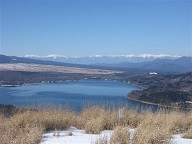 | 鉄砲木ノ頭 | 1291m | 2021.01.31 | 山頂からは雄大な富士山、山中湖の向こう側に南アルプスが一直線に並んでいる姿が見える。 |
| 14 | 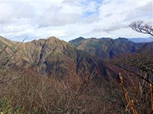 | 大源太山 | 1764m | 2025.11.02 | 山頂からは目の前に大迫力の谷川連峰が広がる。その他、赤城山、浅間山、白砂山など群馬の山々を見渡せる。 |
| 15 | 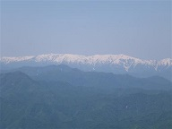 | 日留賀岳 | 1849m | 2022.05.29 | 山頂からは遮るもののない展望が広がる。大佐飛山地の山々、尾瀬～日光の山々の展望が素晴らしい。 |
| 16 | 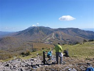 | 湯ノ丸山 | 2101m | 2020.10.25 | 遮るもののない山頂からは、篭ノ登山など浅間山系の山々、四阿山、八ヶ岳など360度の大展望を望むことができる。遠くに富士山も見える。 |
| 17 | 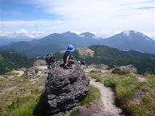 | 日光白根山 | 2578m | 2018.08.19 | 日光周辺や遠く尾瀬の山々を見渡すことができる。日光白根山の複雑な山頂部の景観も秀逸。 |
| 18 | 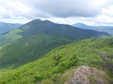 | 尾瀬笠ヶ岳 | 2057m | 2023.08.11 | 至仏山、燧ヶ岳をはじめとする尾瀬の山々、上州武尊山、越後の山々など360度の大展望が広がる。アプローチも含めると日帰りは少しきつい。 |
| 19 | 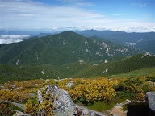 | 金峰山 | 2599m | 2012.09.29 | 奥秩父の山々、遠くには富士山の姿を望むことができる。五丈石に登ると特に素晴らしい景色が広がる。 |
| 20 | 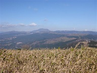 | 玄岳 | 799m | 2020.01.13 | 明るく開けた山頂からは、駿河湾と太平洋の真っ青な海、箱根の山々、そして富士山を望むことができる。 |
| 21 | 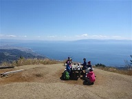 | 浜石岳 | 707m | 2019.03.24 | 山頂からは富士山、真っ青な駿河湾、遠くには南アルプスも望める。アクセスの良い山なので人は多い。 |
| 22 | 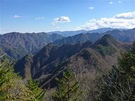 | 南天山 | 1483m | 2015.11.03 | 遠くの景色は見えないが、周囲にギザギザした山々が立ち並ぶ独特の景観が広がる。特に両神山が目立っている。 |
| 23 | 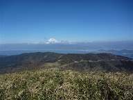 | 達磨山 | 982m | 2013.02.10 | 視界には伊豆の笹に覆われたゆったりした山々が広がり、その奥には富士山が聳えている。眼下には真青な駿河湾が望める。 |
| 24 | 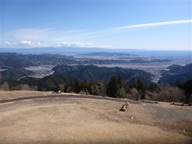 | 高山 | 717m | 2025.02.23 | 草原が広がる広い山頂からは駿河湾、その奥に伊豆、富士山と安倍奥東山稜など広い展望が広がる。 |
| 25 | 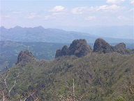 | 谷急山 | 1162m | 2021.05.03 | 山頂からは表妙義と裏妙義、高岩などの西上州の岩山が見渡せる。また、雄大な浅間山も近くに望むことができる。 |
| 26 | 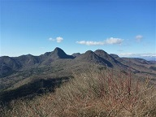 | 水沢山 | 1194m | 2016.01.10 | 上越国境の山々、奥秩父と富士山、西上州の山、八ヶ岳など非常に多くの山を見渡せる。西方には榛名山の中心部の山々を望める。 |
| 27 | 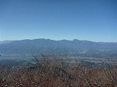 | 茅ヶ岳 | 1704m | 2011.11.16 | 南アルプス、奥秩父、八ヶ岳が近い位置にあり、素晴らしい展望が広がる。八ヶ岳が半分隠れているのが残念。 |
| 28 | 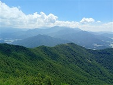 | 男山 | 1851m | 2025.08.31 | 男山の山頂からは目の前に八ヶ岳連峰、周囲には奥秩父の山々や高原野菜畑を見渡せる。隣の天狗山からの展望も良い。 |
| 29 | 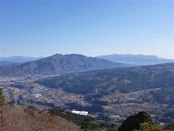 | 岩櫃山 | 803m | 2020.12.06 | 岩山のため山頂からは遮るもののない360度の展望が楽しめる。谷川岳、上州武尊山、小野子山、赤城山、四阿山、浅間山、と群馬の名峰が一望のもと。 |
| 30 | 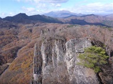 | 高岩 | 1067m | 2024.11.23 | 恐ろしいチムニー30mの鎖場を越えた先は大展望の岩峰。浅間山、榛名山、裏妙義などの山々が見える。 |
| 31 | 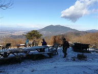 | 宝篋山 | 461m | 2020.01.05 | 山頂は360度の大展望台。間近に筑波山、関東平野の向こうに富士山や霞ヶ浦が見える。 |
| 32 | 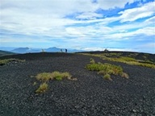 | 二ツ塚 | 1929m | 2025.09.14 | 富士山の中腹にある2つのスコリア丘。宝永山よりはるか下方にある。上塚と下塚があり、どちらからも展望が良い。 |
| 33 | 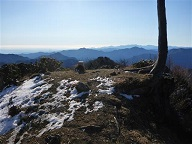 | 天目山 | 1576m | 2015.01.11 | 登山者の少ない非常に静かな山頂。奥多摩・奥武蔵の山々、富士山が見渡せる。 |
| 34 | 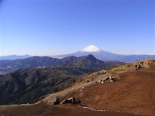 | 明神ヶ岳 | 1169m | 2008.12.07 | 箱根外輪山の山々と中央にある箱根駒ヶ岳と神山を見渡せる。富士山の展望も素晴らしい。 |
| 35 | 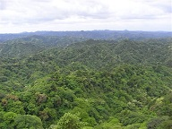 | 高宕山 | 330m | 2009.05.16 | 房総半島の独特の景観が広がる。目の前に広がる特徴のない低い山々はまるで緑の海のよう。 |
| 36 |  | 竜ヶ岳 | 1485m | 2015.12.20 | 富士山の大展望台であり、南アルプスの展望台でもある。ダイヤモンド富士が有名。 |
| 37 | 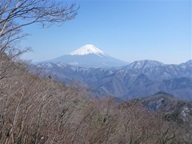 | 蛾ヶ岳 | 1279m | 2025.03.22 | 山頂からは美しい富士山、南アルプスや甲府盆地を見渡すことができる。 |
| 38 | 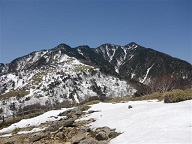 | 丸山 | 1689m | 2017.04.16 | 大きな山体を持つ女峰山の一角にある山で、間近に迫力ある女峰山の山頂部が聳える。 |
| 39 | 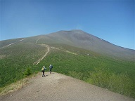 | 小浅間山 | 1655m | 2014.06.01 | 山頂からは美しい浅間山の姿が望めるほか、浅間隠山や鼻曲山、上信国境の山々が望める。 |
| 40 | 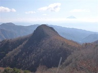 | 升形山 | 1650m | 2019.11.10 | 非常に狭い山頂からは、八ヶ岳と奥秩父の金峰山と瑞牆山、南アルプス、そして黒富士と富士山が並ぶ姿を見ることができる。 |
| 41 |  | 石割山 | 1413m | 2014.12.23 | 富士山の展望台の1つで、目の前に雄大な富士山、遠くには南アルプスが望める。 |
| 42 | 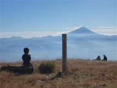 | 小楢山 | 1713m | 2017.11.03 | 山頂からは甲府盆地と、その向こうに富士山を望むことができる。以前は展望がなかったので恐らく木を切り開いたのだろう。 |
| 43 | 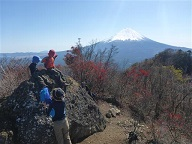 | 鬼ヶ岳 | 1738m | 2018.10.21 | 間近には富士山、周囲に御坂山塊の山々、そして遠くには南アルプスも望むことができる。 |
| 44 | 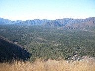 | 三湖台 | 1203m | 2006.12.09 | 間近に迫力ある富士山が望める。緑に染まる広大な富士の樹海も見事。 |
| 45 | 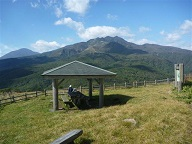 | 大山 | 1158m | 2012.10.13 | 山頂付近に牧場が広がり展望が良い。目の前に聳える女峰山が大きい。 |
| 46 | 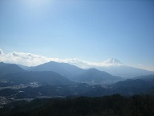 | 高川山 | 976m | 2007.01.14 | 山頂は大きく展望が開けており、美しい富士山の姿が望める。その他、御坂・道志の山々が望める。 |
| 47 | 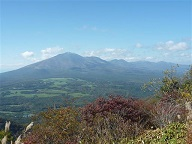 | 浅間隠山 | 1757m | 2012.10.20 | 大展望が広がる山頂で、浅間山が一望できる。眼下には角落山塊、遠くに榛名山や上信の山々を見渡せる。 |
| 48 | 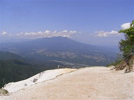 | 日向山 | 1660m | 2009.06.07 | 白砂に覆われた山頂からは真正面に八ヶ岳が望める。見上げると鳳凰三山、甲斐駒ヶ岳など南アルプスの山々も望める。 |
| 49 | 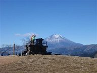 | 大野山 | 723m | 2021.01.10 | 山頂からは富士山と丹沢の山々、そして箱根を見渡すことができる。 |
| 50 |  | 地蔵岳 | 1674m | 2019.10.20 | アンテナが林立する少々無粋な山頂だが、赤城の山々、眼下には大沼、遠く尾瀬の山々を見渡せる。 |